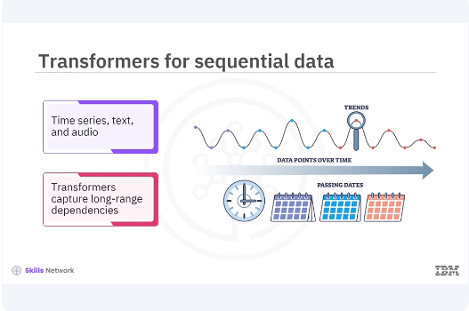
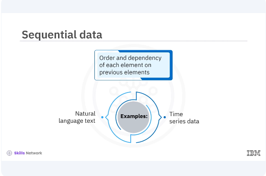
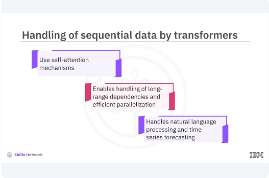
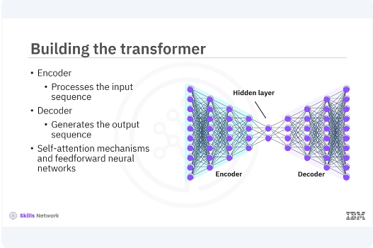
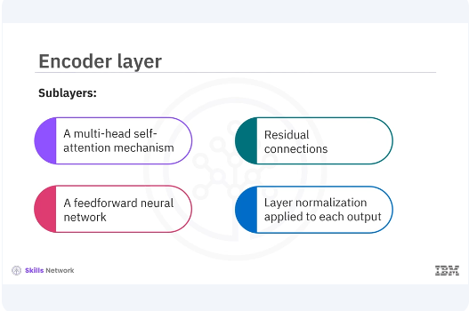
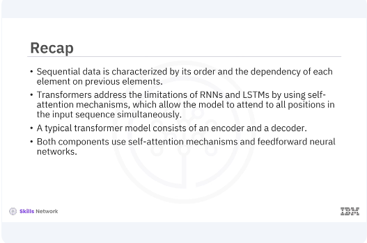

Building Transformers for Sequential Data
Welcome to this video on building transformers for sequential data. After watching this video, you'll be able to Explain the importance and application of transformers in handling sequential data Demonstrate how to build a transformer model for sequential data using Keras with examples

Sequential data, such as time series, text, and audio, is prevalent in many real-world applications Transformers have revolutionized the way you handle such data by allowing models to capture Long-range dependencies more efficiently than traditional recurrent neural networks, RNN, Or long-short-term memory, LSTM.

Sequential data is characterized by its order and the dependency of each element on previous elements. Examples include natural language text, where the meaning of a word depends on the context Provided by preceding words, and time series data, where each data point is influenced by past values Traditional models like RNNs and LSTMs have been used to handle sequential data, but they often struggle with long-term dependencies and parallelization issues.

Transformers address the limitations of RNNs and LSTMs by using self-attention mechanisms This mechanism allows the model to focus on all positions in the input sequence at the same time It enables handling of long-range dependencies and efficient parallelization during training As a result, transformers have become a state-of-the-art approach for many sequential data tasks Including natural language processing and time series forecasting.

Let's start building a transformer model. You will use Keras to define the layers and structure of the model A typical transformer model consists of an encoder and a decoder The encoder processes the input sequence while the decoder generates the output sequence. Both components use self-attention mechanisms and feed-forward neural networks.
pyenv activate venv3.10.4
# Multi-Head Self-Attention:
import tensorflow as tf
from tensorflow.keras.layers import Layer, Dense, LayerNormalization, Dropout
class MultiHeadSelfAttention(Layer):
def __init__(self, embed_dim, num_heads=8):
super(MultiHeadSelfAttention, self).__init__()
self.embed_dim = embed_dim
self.num_heads = num_heads
self.projection_dim = embed_dim // num_heads
self.query_dense = Dense(embed_dim)
self.key_dense = Dense(embed_dim)
self.value_dense = Dense(embed_dim)
self.combine_heads = Dense(embed_dim)
def attention(self, query, key, value):
score = tf.matmul(query, key, transpose_b=True)
dim_key = tf.cast(tf.shape(key)[-1], tf.float32)
scaled_score = score / tf.math.sqrt(dim_key)
weights = tf.nn.softmax(scaled_score, axis=-1)
output = tf.matmul(weights, value)
return output, weights
def split_heads(self, x, batch_size):
x = tf.reshape(x, (batch_size, -1, self.num_heads, self.projection_dim))
return tf.transpose(x, perm=[0, 2, 1, 3])
def call(self, inputs):
batch_size = tf.shape(inputs)[0]
query = self.query_dense(inputs)
key = self.key_dense(inputs)
value = self.value_dense(inputs)
query = self.split_heads(query, batch_size)
key = self.split_heads(key, batch_size)
value = self.split_heads(value, batch_size)
attention, _ = self.attention(query, key, value)
attention = tf.transpose(attention, perm=[0, 2, 1, 3])
concat_attention = tf.reshape(
attention,
(batch_size, -1, self.embed_dim)
)
output = self.combine_heads(concat_attention)
return output
In the example, the multi-head self-attention class defines the multi-head self-attention mechanism.
def attention(self, query, key, value):
score = tf.matmul(query, key, transpose_b=True)
dim_key = tf.cast(tf.shape(key)[-1], tf.float32)
scaled_score = score / tf.math.sqrt(dim_key)
weights = tf.nn.softmax(scaled_score, axis=-1)
output = tf.matmul(weights, value)
return output, weights
The attention method computes the attention scores and weighted sum of the values.
def split_heads(self, x, batch_size):
x = tf.reshape(x, (batch_size, -1, self.num_heads, self.projection_dim))
return tf.transpose(x, perm=[0, 2, 1, 3])
The split-heads method splits the input into multiple heads for parallel attention computation.
def call(self, inputs):
batch_size = tf.shape(inputs)[0]
query = self.query_dense(inputs)
key = self.key_dense(inputs)
value = self.value_dense(inputs)
query = self.split_heads(query, batch_size)
key = self.split_heads(key, batch_size)
value = self.split_heads(value, batch_size)
attention, _ = self.attention(query, key, value)
attention = tf.transpose(attention, perm=[0, 2, 1, 3])
concat_attention = tf.reshape(
attention,
(batch_size, -1, self.embed_dim)
)
output = self.combine_heads(concat_attention)
return output
The call method applies the self-attention mechanism and combines the heads
class TransformerBlock(Layer):
def __init__(self, embed_dim, num_heads, ff_dim, rate=0.1):
super(TransformerBlock, self).__init__()
self.att = MultiHeadSelfAttention(embed_dim, num_heads)
self.ffn = tf.keras.Sequential([
Dense(ff_dim, activation="relu"),
Dense(embed_dim),
])
self.layernorm1 = LayerNormalization(epsilon=1e-6)
self.layernorm2 = LayerNormalization(epsilon=1e-6)
self.dropout1 = Dropout(rate)
self.dropout2 = Dropout(rate)
def call(self, inputs, training):
attn_output = self.att(inputs)
attn_output = self.dropout1(attn_output, training=training)
out1 = self.layernorm1(inputs + attn_output)
ffn_output = self.ffn(out1)
ffn_output = self.dropout2(ffn_output, training=training)
return self.layernorm2(out1 + ffn_output)
# Example usage
embed_dim = 128
num_heads = 8
ff_dim = 512
sequence_length = 100
transformer_block = TransformerBlock(embed_dim, num_heads, ff_dim)
inputs = tf.random.uniform((1, sequence_length, embed_dim))
The transformer block class defines a transformer block with self-attention and a feed-forward network The call method applies the self-attention followed by the feed-forward network with residual connections and layer normalization.

The encoder layer in a transformer model consists of a multi-head self-attention mechanism followed by a feed-forward neural network Both sub-layers have residual connections around them, and layer normalization is applied to the output of each sub-layer.
class EncoderLayer(Layer):
def __init__(self, embed_dim, num_heads, ff_dim, rate=0.1):
super(EncoderLayer, self).__init__()
self.att = MultiHeadSelfAttention(embed_dim, num_heads)
self.ffn = tf.keras.Sequential([
Dense(ff_dim, activation="relu"),
Dense(embed_dim),
])
self.layernorm1 = LayerNormalization(epsilon=1e-6)
self.layernorm2 = LayerNormalization(epsilon=1e-6)
self.dropout1 = Dropout(rate)
self.dropout2 = Dropout(rate)
def call(self, inputs, training):
attn_output = self.att(inputs)
attn_output = self.dropout1(attn_output, training=training)
out1 = self.layernorm1(inputs + attn_output)
ffn_output = self.ffn(out1)
ffn_output = self.dropout2(ffn_output, training=training)
return self.layernorm2(out1 + ffn_output)
# Example usage
encoder_layer = EncoderLayer(embed_dim, num_heads, ff_dim)
outputs = encoder_layer(inputs)
print(outputs.shape) # Should print (1, 100, 128)
Let's implement the encoder layer in an example In the example, the encoder layer class defines an encoder layer in the transformer model The call method applies the self-attention followed by the feed-forward network with residual connections and layer normalization.

In this video, you learned. Sequential data is characterized by its order and the dependency of each element on previous elements Transformers address the limitations of RNNs and LSTMs by using self-attention mechanisms which allow the model to attend to all positions in the input sequence simultaneously A typical transformer model consists of an encoder and a decoder Both components use self-attention mechanisms and feed-forward neural networks